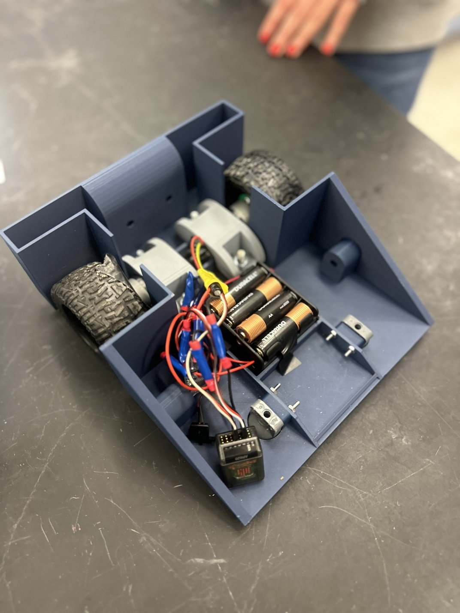
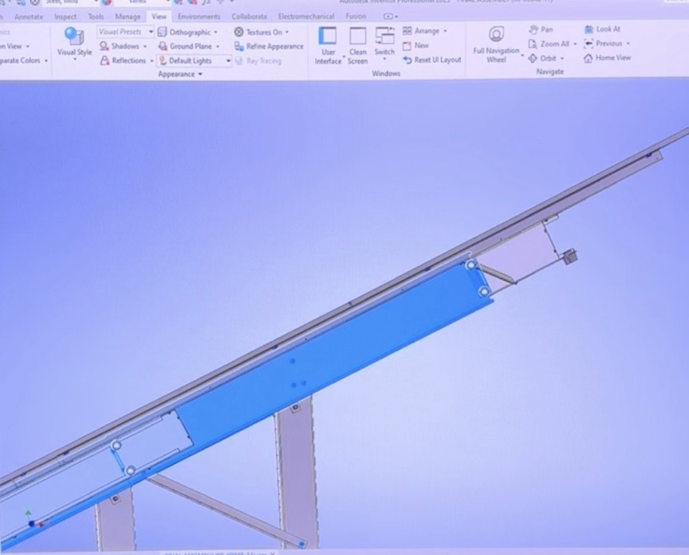
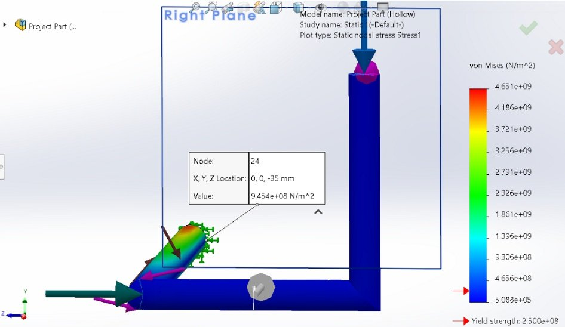
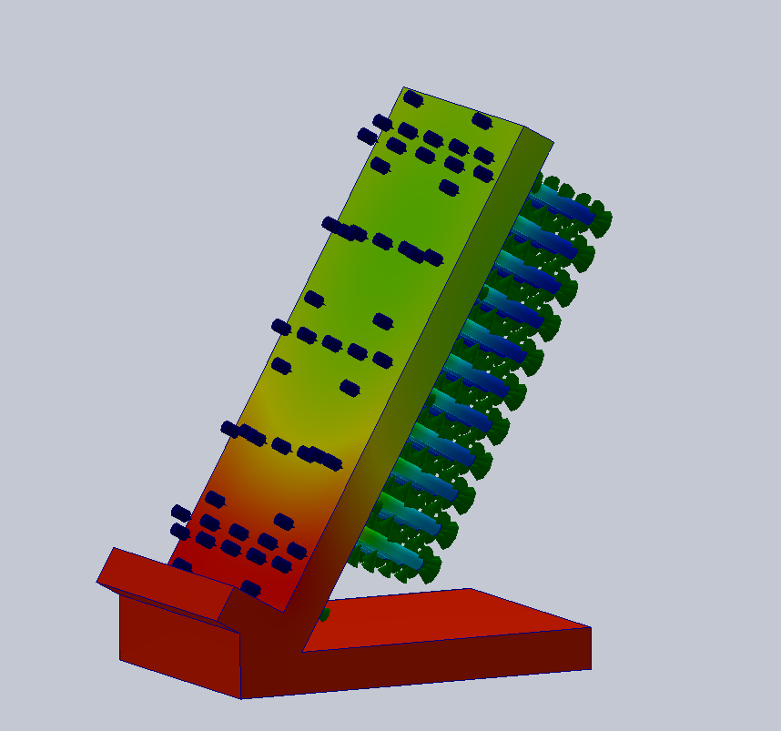
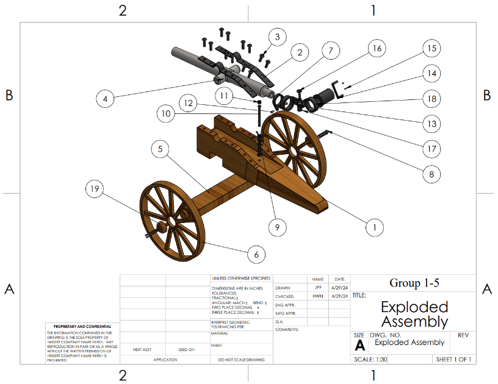
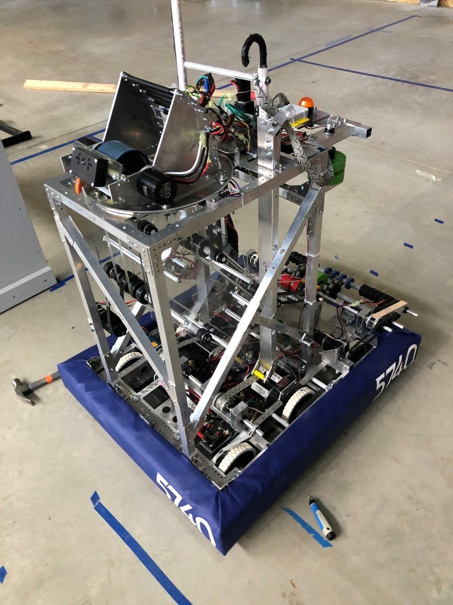

AI Robot Guide — Senior Research
A mobile robot that interprets its environment and generates its own motion decisions using onboard AI.
View project →Mechanical Engineering × Artificial Intelligence
Mechanical Engineering student at Villanova University (Class of 2027) with a minor in AI — building at the intersection of CAD design, simulation, robotics, and applied AI.
01 — About
I'm a mechanical engineering student at Villanova's College of Engineering, concentrating in Dynamic Systems. My work runs the full hardware lifecycle: CAD model, GD&T drawing package, FEA validation, then out to the shop — CNC mill, 3D printer, waterjet — and back through testing and post-failure analysis. I've toleranced production drawings that real manufacturers built from at a solar racking company, machined structural plates for competition robots, and designed a combat bot that survived the arena.
I'm aiming at robotics, where machines have to hold up outside the lab. What I add on top of the mechanical fundamentals is genuine software fluency: I've built a RAG-powered web app, evaluate large language models as an AI fellow, and my senior research puts perception and edge compute (NVIDIA Jetson Orin) on a mobile robot that makes its own motion decisions. I can design the bracket, and I can hold my own in the autonomy standup.
Off the clock I lead the steering sub-team for Villanova's Baja SAE offroad vehicle, tutor Physics II, and carry the discipline of two years of 5 AM rowing practices.
02 — Projects
Every project below I either built, designed, or analyzed myself — click any card for the full gallery and story.
A mobile robot that interprets its environment and generates its own motion decisions using onboard AI.
View project →
2 imagesFull cradle-to-grave development of a combat robot: design, fabrication, electrical integration, testing, and post-failure analysis.
View project →
Production part drawings, assemblies, and QA documentation for patented solar racking hardware — with GD&T to keep manufacturers in spec.
View project →
2 imagesStatic stress analysis of a bent hollow tube under point loading — von Mises stress mapped against yield.
View project →
2 imagesA to-scale wireless iPhone charger retrofitted with a fin array, validated with a thermal simulation.
View project →
3 imagesA fully-modeled 19-part cannon assembly with drawing package, exploded views, and bill of materials.
View project →
4 imagesCompetition robots built from scratch each season — CAD in Inventor, CNC-milled structural plates, full-shop fabrication.
View project →A functioning web app that combines generative-AI orchestration, live GPS data, and RAG documentation to narrate the history of wherever you're standing.
View project →A cost-effective automatic fire suppressant system designed for tent camps in arid climates.
View project →Nanoparticle assembly and atomic monolayer analysis: enhanced PFAS detection and fireproofing ordinary textiles.
View project →03 — Experience
Worked under the senior process engineer at an aluminum processing plant to improve operating efficiency. Investigated the wastewater treatment system and identified design improvements estimated to save nearly $1M per year; analyzed the plant's natural gas infrastructure and recommended optimal meter placement.
AI feedback research as an independent contractor with industry AI labs. Develop domain-specific prompts to probe large language models and evaluate outputs for scientific accuracy, clarity, and depth in specialized engineering subfields.
Designed parts, drawings, assemblies, and BOMs with GD&T in SolidWorks and Autodesk Inventor. Rapid-prototyped QA tooling and produced First Article Inspection reports and load-test summaries for manufactured solar racking components.
Researched nanoparticle assembly and atomic monolayer analysis — enhanced PFAS particle detection and fireproofing of ordinary textiles through nanoparticle coatings.
04 — Skills
05 — Contact
I'm open to internship and full-time opportunities in mechanical design, robotics, and AI-adjacent engineering.